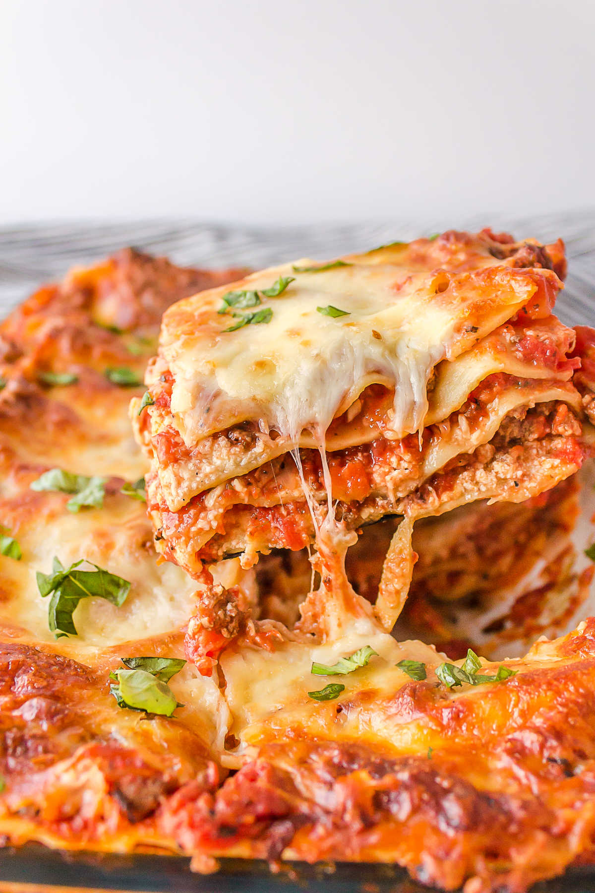

Lasagna

Description:
This is a recipe to create a mouth-watering, scrumptuous, life-changing lasagna.
Make this for your family, friends, even enemies!
Ingredients:
- ground beef
- italian sausage
- pasta sauce
- tomato paste
- ricotta cheese
- mozzarela cheese
- parmesan cheese
- spices
- garlic
- onion
- parsley
- egg
- lasagna noodles
How to cook the perfect Lasagna:
- Boil pasta: Cook in a large pot of salted water per the recipe below.
- Prepare meat sauce: Cook sausage and beef with onion and garlic. Drain well, add the pasta sauce & simmer it for a few minutes to thicken.
- Combine cheese mixture: Stir the cheese mixture together in a bowl.
- Layer & bake: Layer the meat sauce and cheese mixture with lasagna noodles and bake until browned and bubbly.
How to layer your lasagna:
- Spread about a cup of meat sauce into a 9x13 pan. Add a layer of noodles.
- Top the noodles with some of the ricotta cheese mixture. Repeat the layers, ending with a layer of noodles and sauce
- Cover with foil and bake. Remove foil, top with mozzarella and parmesan, and bake for another 15 minutes.
Once you have prepared the meat sauce and the cheese mixture, you're ready to layer. This is the order of layers:
- sauce - noodles - cheese
- sauce - noodles - cheese
- sauce - noodles - cheese
- noodles - sauce(bake) - cheese
Bake this for a total of one hour for a perfect browned cheese on top.
Make sure to layer and cover it tightly with aluminum foil until it's cooked.
Proceed to remove the aluminum foil and put it back in the oven for an additional 15 minutes for some good cheese action.